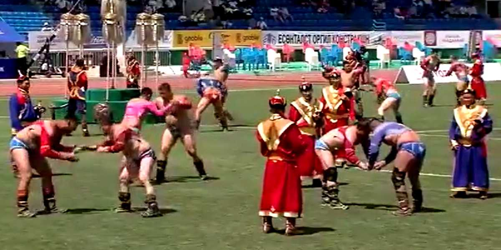
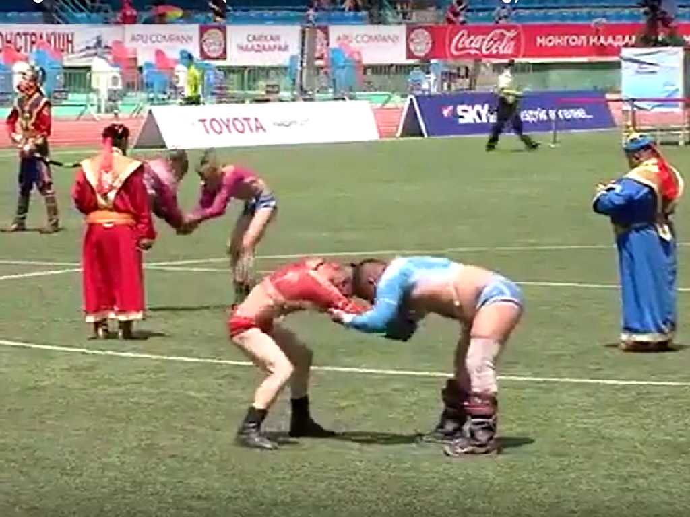
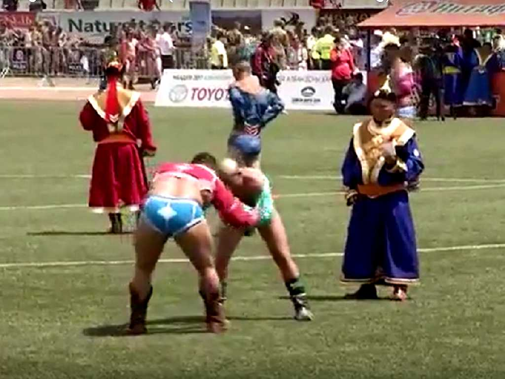
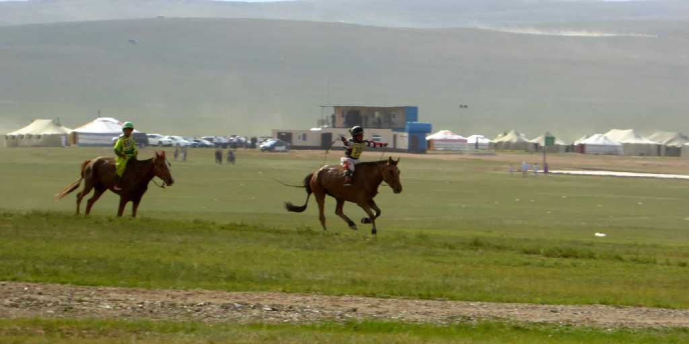
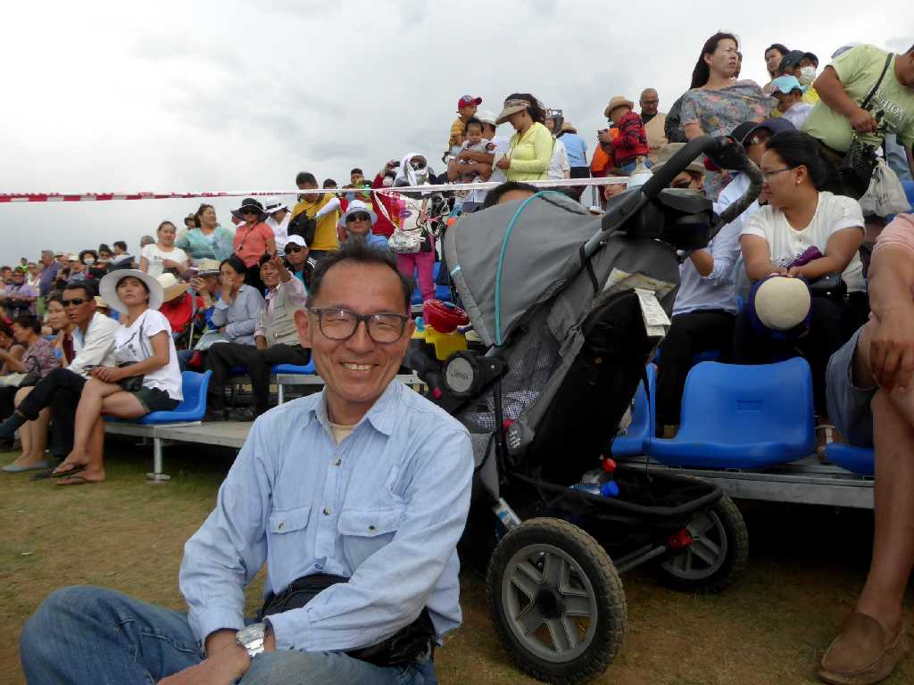
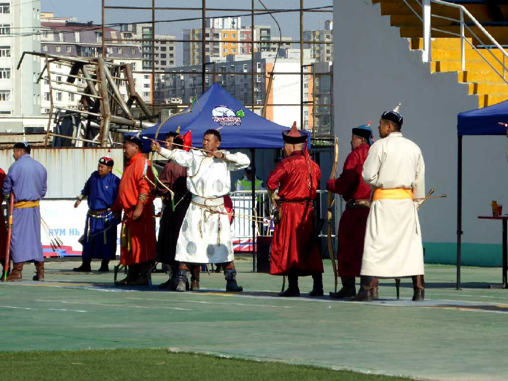
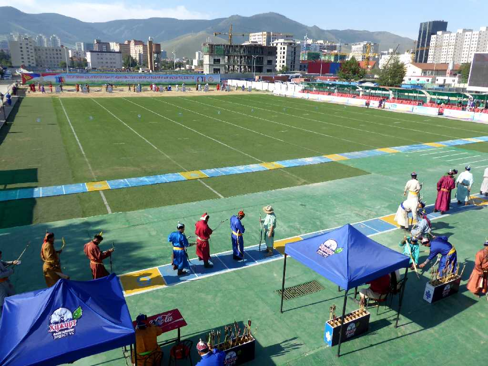
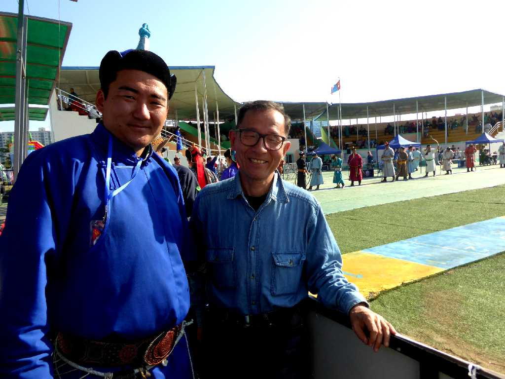

Mongolian Wrestling Naadam Festival National Sports Stadium Ulaanbaatar
紀元前３世紀頃に力強く組み合うこと馬を早く走らせること弓を射ることの三種目を争い会う宗教的な奉納儀式としてまた軍事訓練として伝統的に受け継がれてきた

Mongolian Wrestling Naadam Festival
ブフは日本ではモンゴル相撲と言われているが西欧のレスリングに近い

Mongolian Wrestling Naadam Festival

30km Mongolian Horse Race Naadam Festival Khui Doloon Khudag Ulaanbaatar
ナーダム祭で行われる世界一長距離の３０ｋｍ競馬レース
Mongolian Horse Race Naadam Festival

July 11 2017 Naadam Festival

Mongolian Archery Naadam Festival
モンゴル弓射は７５ｍ(女性６０ｍ)先の的を狙い争う

Mongolian Archery Field

July 12 2017 Naadam Festival